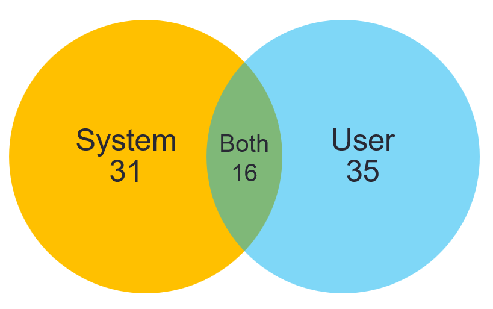
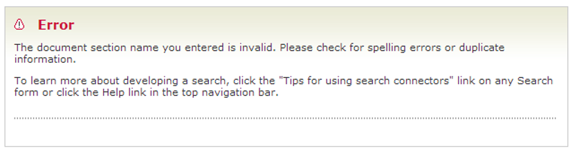
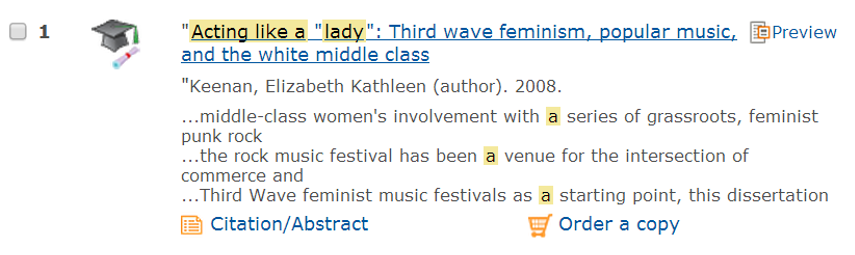
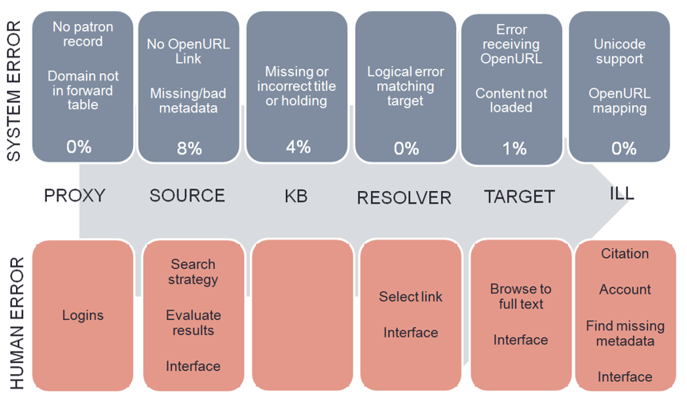

Why can't students get the sources they need?
Results from a real availability study
Sanjeet Mann
Arts & Electronic Resources Librarian, University of Redlands
29th Annual NASIG Conference, Fort Worth, Texas
May 2, 2014
How do you get to full text?
Librarian

Student

Research methods
Technical errors =
availability study
- Quantitative
- Large sample for statistical validity
- Researcher tests access ("simulated availability")
Human interaction =
usability study
- Qualitative
- 5-7 users
- Researcher observes library users ("real availability")
My methodology
- Cognitive walkthrough
- 7 students x 2 searches x 10 results = 142 interactions
- Jing screen capture software
- Demographic survey and results spreadsheet
Results

Errors

Severe system errors
- A&I database has no OpenURL link
- Target database refuses the OpenURL
- A&I database has bad/missing metadata
- Can info be found in Google?
- Knowledge base doesn't offer article-level linking
- Is student willing to browse?
Student encounters a system error

Severe human errors
- Didn't test link
- Used system incorrectly
- Overlooked important information
- Got frustrated and gave up
Student experiences user error

Conceptual model

Questions availability studies can address
- How often do errors occur? Should we be satisfied with our technical infrastructure? (systems)
- How often do users need ILL? (interlibrary loan)
- Do we have enough full text in the collection? (collection development)
- Are we teaching users what they need to be successful at obtaining electronic resources? (instruction)
For discussion at University of Redlands
- 86.5% availability rate in 2013 simulated study
- Common problems = source metadata, KB support for OA titles
- 26.8% local availability (research libraries average 60%)
- 2 of 3 items not held in local collection in 2013 simulated study
- 43% of interactions result in ILL in 2014 real study
- Threshold concepts vs. search/retrieval mechanics
- How do you teach students to be thoughtful, resilient searchers?
What would I do differently?
- Larger, personalized incentives
- Simplify research design
- Cognitive walkthrough as group activity
- Jing + Camtasia Studio worked ok
Further reading
Link to website
Selective bibliography
Presentation slides
University of Redlands availability study datasets:
- 2012 (simulated)
- 2013 (simulated)
- 2014 (real)